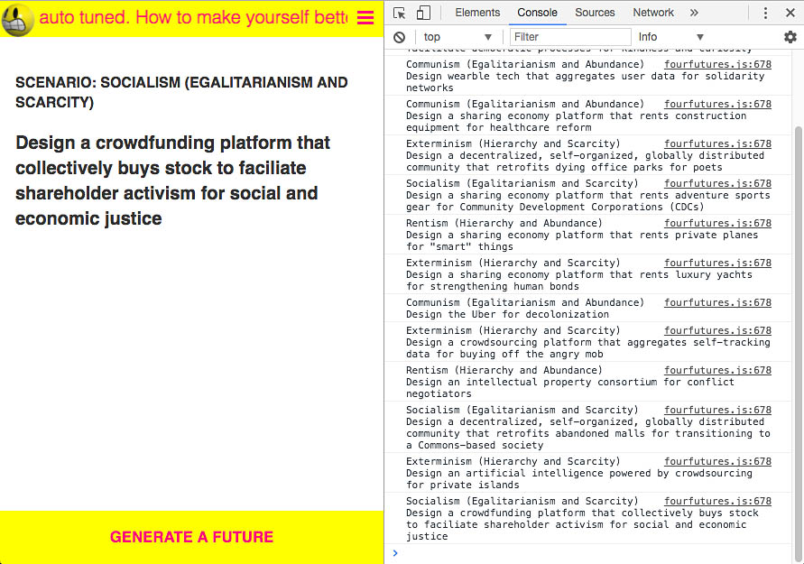
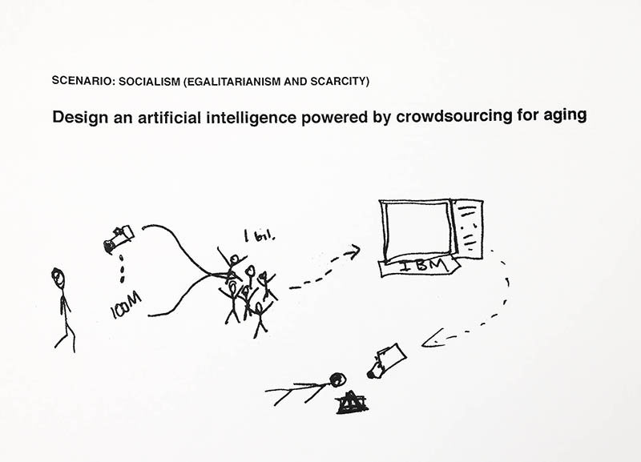
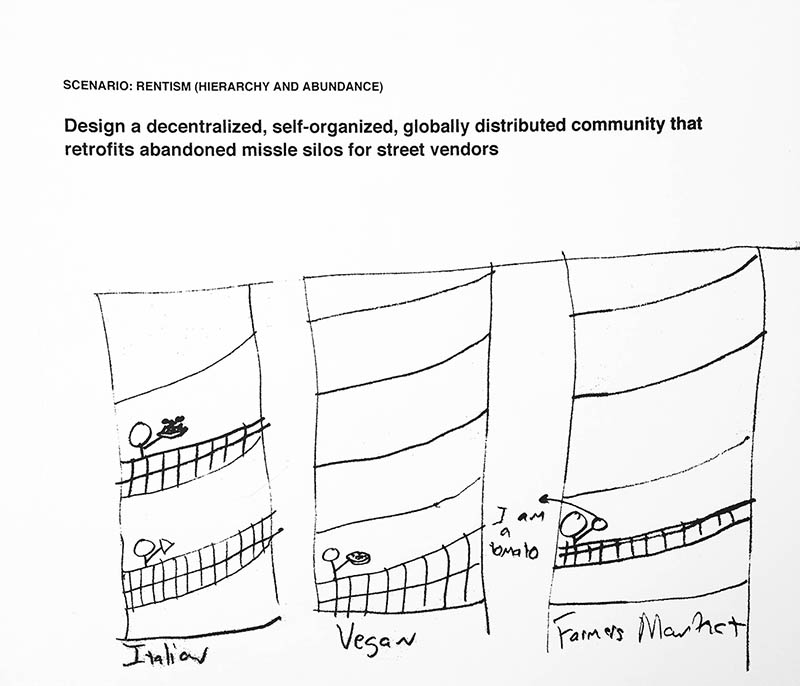
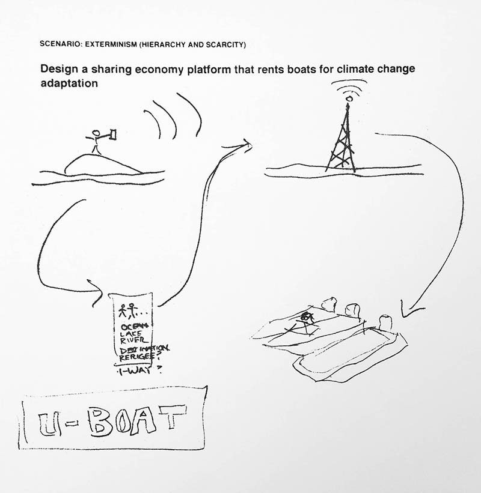

Unthinking the Sharing Economy is an ideation workshop to help tech and civic workers reimagine “sharing" platforms and design cooperative solutions for the post-carbon, post-capitalist future. The workshop includes a video art mash-up of a speculative text, and an algorithm that uses combinatorial logic to randomly generate over 4000 different future design challenges, ranging from the emancipatory and pragmatic to the terrifying and absurd.

Curating the future through algorithmic design.

Millions of cameras installed in homes to monitor the processes of aging. Video feeds, categorized by Mechanical Turk workers, are then used to train IBM's Watson to recognize an aging-related emergency (or death) and take appropriate action (e.g. call an ambulance).

Retrofitted missle silos for street vendors, complete with farmers market and winding staircase architecture, "like the Guggenheim".

U-Boat mobile app allows stranded users to summon rescue boats. Includes options for refugees and one-way trips.